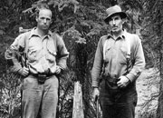
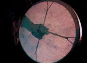
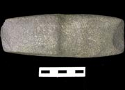
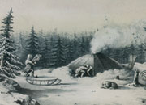

Histoire du Corbeau : Les Contes
«L'histoire du Corbeau est infinie. Je crois qu'on ne peut pas la conter en six mois, si on la connaît. Oui, c’est de cette façon que le monde est fait. Lorsque le Corbeau a quitté cette place, il a volé au-dessus du lac Fish et du lac Marsh, dans cette direction, jusqu’au lac Frances. Il a parcouru le monde entier. Il a mis du poisson, ici et là. C’est pourquoi nous avons les poissons d’eau douce. Oui. Il a obtenu le poisson de l’Aigle. C’est pourquoi nous avons différentes espèces de poissons.»
Johnnie Smith raconte l'histoire du corbeau, 1998
YA, fonds Archives du Yukon, 2009/9R, SR 270 (3)
Les contes font partie intégrante du patrimoine culturel des Premières nations du Yukon. Durant des générations, les contes ont servi à l’explication et à l’interprétation du monde autochtone. Ils contiennent des leçons concernant les ressources et les relations interpersonnelles et permettent de transmettre de l’information sur des événements historiques. Les contes portent sur des thèmes essentiels à la vie.
Un des contes des plus typiques décrit comment le Corbeau a créé le monde. Ces contes sont reliés aux contes du Corbeau des peuples côtiers de l’Alaska. Aux yeux des Premières nations du Yukon, le corbeau était responsable du monde actuel. Le corbeau était le créateur, le filou, le transformateur. Il y a différentes versions sur la façon dont le Corbeau a créé le monde. La présente version a été contée par l’aîné de Kwanlin Dun, monsieur Johnnie Smith, fils de Kitty et Billy Smith.
«Ce Corbeau fait tout, nous enseigne tout.»
Kitty Smith (extrait de Cruikshank: Dän Dhá Ts'edenintth'é/Reading Voices)
Passer au tableau Kwäday Kwädän : Ancêtres«C’est comme ça qu’il a fait le monde.»
Kitty Smith : extrait de My Stories are My Wealth
Agrandir l’image
Les géologues Hugh Bostock et Joe Winters, vallée de la McQuesten (années 30). Ils se tiennent près d’un arbre coupé à l’aide d’une hache de pierre.
AY, collection Hare nº 6985
Le tambour traditionnel du musicien tutchone du Nord Jerry Alfred.
Etsi Shon
Une herminette de pierre, qui pourrait être vieille de 1000 ans, trouvée à un lieu de pêche ancestral aux rapides Whitehorse. Bien qu’il n’y ait pas de données répertoriées avant le milieu du XIXe siècle, des vestiges archéologiques montrent que l’être humain foulait déjà le sol du Yukon il y a presque 25 000 ans.
Gouvernement du Yukon
Croquis d’une tente gwichin en dôme, par Alexander Hunter Murray (dessiné vers 1850). Murray, un commerçant de la Compagnie de la baie d’Hudson, est venu au Yukon en 1847 et a établi Fort Yukon. Plusieurs de ses croquis, dont celui-ci, ont été publiés en 1851 dans les Arctic Searching Expeditions de Sir John Richardson.
AY, collection McClellan, 90/57